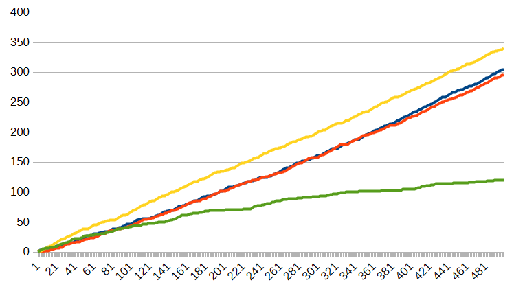
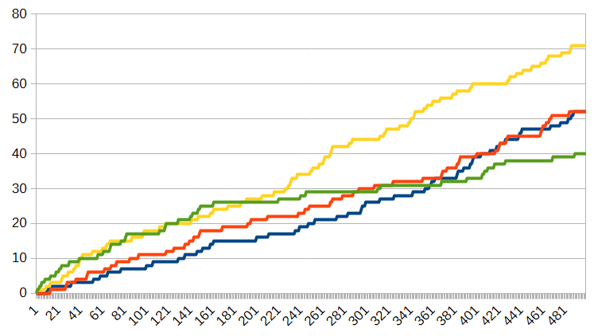
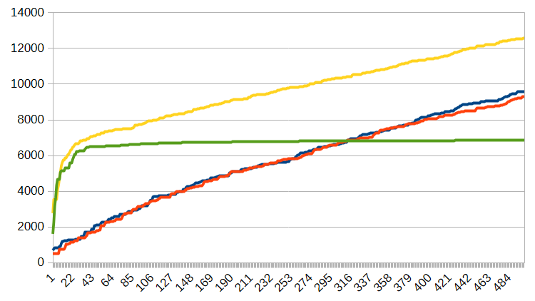
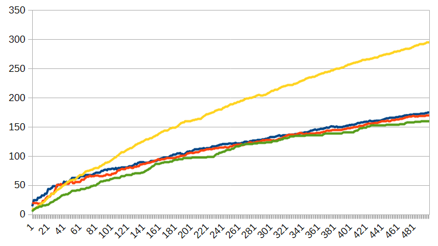

©2026 Joachim De Witte. All rights reserved.
Published under the Creative Commons BY–NC–ND 4.0
license.
Introduction
Narrative generation has traditionally been approached through optimisation-driven paradigms: supervised learning, reinforcement learning, or prompt-conditioned sampling from large language models (LLMs). These systems are typically analysed in terms of convergence, stability, and average-case behaviour. Yet narrative generation is not merely a mapping from input to output—it is a developmental process in which structure, style, and internal dynamics evolve over time. When generative models are embedded in self-recursive pipelines, their behaviour can depart sharply from classical machine learning expectations and instead resemble the dynamics of biological systems.
This paper investigates such a setting. We study a dynamic recursive narrative pipeline that couples a Dynamic Modular Language Graph (DMLG) with an LLM acting as moderator, evaluator, and structural stabiliser. The pipeline begins with a minimal LLM-derived curriculum of twenty short stories and recursively generates new material through a multi-stage loop: the DMLG produces candidate stories, the LLM evaluates and filters them, and the highest-scoring outputs are used to update the model. This process is repeated across hundreds of epochs, producing a lineage of narrative agents whose behaviour is shaped not only by the initial curriculum but also by their own evolving outputs.
Classical ML would predict that such a system converges toward a stable optimum or degenerates into noise. Instead, we observe a richer phenomenon: attractor ecologies. Each dynamic run, despite identical architecture and identical training data, develops a distinct and stable narrative “personality” characterised by its own state markers, action loops, and environmental micro-frames. These attractors persist across epochs and shape the model’s long-term behaviour. When the elite stories of two independent runs are combined, the resulting crossover model develops novel attractors that were absent in either parent lineage. Conversely, a GR-only run trained without LLM moderation collapses into a degenerate attractor basin marked by fossilised phrases, syntactic fragmentation, and semantic drift. Finally, a static model trained on the combined elite stories compresses these attractors into a single canonical space dominated by the structurally richest lineage.
These observations are not typical of machine learning systems. Instead, they resemble biological processes: divergence between individuals with shared genetic material, hybridisation producing emergent traits, inheritance of dominant structures, and senescence under isolation. We argue that recursive narrative pipelines constitute a form of AI life for narration: systems whose behaviour is governed not by optimisation alone but by lineage-specific attractor dynamics that evolve, interact, and persist across generations.
Contributions
This paper makes the following contributions:
We demonstrate that identical DMLG+LLM recursive pipelines diverge into distinct attractor ecologies, each forming a stable narrative personality.
We show that combining elite stories from independent runs produces a crossover model with novel attractors absent in either parent lineage.
We identify degenerative attractor collapse in a GR-only run, revealing the necessity of external structural input for long-term narrative viability.
We show that a static model trained on the combined elite stories performs canon compression, inheriting and amplifying the attractors of the structurally dominant lineage.
We interpret these findings through a biological lens, arguing that recursive narrative pipelines exhibit life-like dynamics including divergence, hybridisation, inheritance, and senescence.
Together, these results suggest that recursive generative systems occupy a regime beyond classical optimisation: a developmental, ecological regime in which attractors evolve and propagate across generations of models. This opens a new perspective on narrative AI, positioning it not merely as a tool for text generation but as a substrate for studying emergent, life-like dynamics in artificial systems.
Motivation
The Recursive Parrot project was initiated to investigate whether narrative generation could serve as a viable substrate for studying the dynamics of artificial life. Language and stories provide a rich, structured environment in which agents can exhibit development, adaptation, drift, and long-run behavioural change. This makes narration an ideal testbed for evaluating whether life-like properties can emerge in systems that operate purely through symbolic and generative processes.
A second motivation was to evaluate the capabilities of a Dynamical Modular Language Graph (DMLG) as a non-static modelling paradigm. Unlike conventional language models, which are trained once and then frozen, a DMLG agent continues to evolve during generation. This allows the model to express its internal developmental trajectory directly in its outputs, enabling the study of learning, drift, and degradation as observable phenomena rather than hidden training dynamics.
Third, the project aimed to test a full feedback-loop narrative pipeline in which high-quality stories produced by the system become new training data for subsequent generations. This closed-loop design makes it possible to examine whether a synthetic organism can sustain long-term improvement, maintain narrative coherence, or instead converge toward attractor states and structural limitations.
Finally, the experiment provides an opportunity to explore broader implications for AGI. By observing how a self-recursive generative system behaves over extended periods—how it learns, stabilises, drifts, and eventually exhibits architectural senescence—we gain insight into the developmental constraints and long-term viability of GR-dominant cognitive architectures. These observations inform not only the design of future narrative systems, but also the theoretical foundations of artificial general intelligence.
Related Work
Research on autonomous narration, hybrid modular architectures, and dynamically evolving generative systems spans several partially connected domains. The present work builds on three strands of prior research: (1) the structural foundations of the Triadic Cosmos ecosystem, (2) diffusion-style and iterative generative methodologies, and (3) emerging work on AI life, self-recursive learning loops, and dynamically evolving cognitive systems.
Triadic Cosmos Foundations
The Dynamic Modular Language Graph (DMLG) introduces a deterministic, graph-based governance architecture in which language is modeled as traversal through a canonical token-transition graph. DMLG provides the geometric (G) and recursive (R) substrate for the raw generative component of the narrator pipeline: explicit structure, modular paging, PRE-based governance, and deterministic transitions. Its emphasis on structure over scale directly motivates the canonical-parrot regime in the IEGR taxonomy.
Dynamic Modular Language Models (DMLMs) provide the predecessor architecture to DMLG: a multi-agent, evaluator-governed system in which micro-models, paging structures, and a PRE loop produce coherent long-form narrative structure without transformers or large-scale training. Although DMLMs focus on generation rather than governance, they establish the architectural principles—modularity, explicit interfaces, evaluator-driven recursion—that underpin the narrator pipeline’s raw generative substrate.
The structural taxonomy of intelligence (IEGR) provides the conceptual framework for understanding hybrid systems as sophisticated parrots: systems that are IEGR-complete but not yet IEGR-scaled. In this taxonomy, LLMs supply energetic and informational roles (E, I), while DMLG supplies geometric and recursive roles (G, R). The narrator pipeline is therefore positioned as a concrete instantiation of IEGR complementarity: a hybrid system whose long-form generative capability arises from the integration of complementary structural roles.
Diffusion-Driven Narration and Hybrid Generative Pipelines
The diffusion-driven narration framework introduced the idea that long-form narrative structure can emerge through staged denoising across heterogeneous cognitive modules. In this methodology, DMLG provides canonical geometry and recursive scaffolding, while LLMs supply semantic refinement, evaluative judgment, and informational expansion. The resulting system behaves as a distributed cognitive architecture rather than a single generative model.
The present work extends this paradigm by replacing the static diffusion trajectory with a dynamic learning loop: the Recursive Parrot. Instead of denoising a fixed latent manuscript, the system evolves its own canon over time through curriculum expansion, context accumulation, and repeated self-recursion. This positions the Recursive Parrot as a dynamic, self-modifying extension of diffusion-driven narration, where the generative substrate is not merely refined but continuously reshaped by its own outputs.
AI Life, Self-Recursion, and Dynamic Learning Systems
A growing body of research explores systems that exhibit properties analogous to biological life: persistent memory, self-recursion, attractor formation, and autonomous improvement. Early work on evolutionary computation demonstrated that iterative variation and selection can yield complex adaptive behavior, but these systems lacked semantic structure and long-horizon coherence.
More recent work investigates self-refinement loops in LLMs, including self-editing , self-correction , and multi-agent coordination . These systems demonstrate that recursive prompting can improve local coherence, but they lack persistent structural memory and cannot form stable world models or long-term attractors.
Research on autonomous agents with persistent memory—such as generative agents , tool-augmented LLMs , and hierarchical planning systems —shows that long-horizon behavior requires explicit structure and stateful recursion. However, these systems rely on emergent LLM behavior rather than deterministic structural governance.
The Recursive Parrot differs fundamentally from these approaches. It implements:
a plastically trainable attractor memory (DMLG + curriculum),
a self-recursive learning loop in which each generation becomes training data,
dynamic canon formation through repeated structural consolidation,
hybrid IEGR complementarity between symbolic memory and statistical moderation,
and an examination mode that isolates the pure GR-component without LLM influence.
This positions the Recursive Parrot within the emerging field of AI life: systems that exhibit evolutionary dynamics, persistent identity, and long-term structural drift. Unlike self-refinement loops in LLMs, the Recursive Parrot maintains a stable, inspectable memory substrate that evolves over time, enabling attractor formation and hybrid vigor analogous to biological systems.
Dynamic Narration, Long-Form Generation, and Structural Control
Long-form generation has traditionally been approached through large transformer models , which demonstrate strong local coherence but struggle with global structure, narrative consistency, and long-horizon planning. Techniques such as chain-of-thought prompting , hierarchical prompting , and self-refinement improve local reasoning but do not provide stable global narrative control.
Autonomous authoring systems such as AutoStory , Socratic Models , and multi-agent writing frameworks explore decomposition and planning, but rely on emergent LLM behavior rather than explicit structural governance.
The Recursive Parrot contributes to this literature by demonstrating that long-form narrative stability can be achieved through a dynamic structural substrate rather than through scaling or prompting alone. Its combination of deterministic geometry (DMLG), semantic selection pressure (LLM), and persistent curriculum memory provides a novel form of structural control that enables autonomous continuation, attractor formation, and long-horizon coherence.
Difficulties with Self-Recursion in Machine Learning
Self-recursion—the process in which a model repeatedly consumes, transforms, and retrains on its own outputs—is notoriously unstable in contemporary machine learning systems. Although recent work has explored iterative refinement loops in large language models (LLMs), the broader literature consistently shows that recursive pipelines amplify errors, collapse diversity, and destabilize internal representations. Before introducing the Recursive Parrot architecture, it is therefore essential to outline the structural challenges that make extreme self-recursion difficult or even destructive in conventional systems.
Error Amplification and Drift Accumulation
In standard ML pipelines, each generation introduces small deviations from the training distribution. When a model recursively trains on its own outputs, these deviations accumulate across iterations. The result is a compounding process of:
semantic drift: gradual divergence from the original domain,
distributional drift: collapse toward the model’s own biases,
error amplification: small inconsistencies becoming structural failures.
Empirical studies on LLM self-refinement show that even mild recursive prompting leads to runaway hallucination, loss of factual grounding, and degradation of syntactic structure after only a few iterations. Without an external anchor, recursion becomes a positive-feedback loop for noise.
Mode Collapse and Loss of Variation
Recursive training tends to collapse the output distribution into a narrow attractor. Repeated patterns become reinforced, rare patterns disappear, and stylistic diversity vanishes. This phenomenon is well documented in generative adversarial networks, evolutionary computation, and self-distillation pipelines. In LLMs, mode collapse manifests as repetitive phrasing, rigid templates, and loss of creative variation—precisely the opposite of what long-form narrative systems require.
Catastrophic Forgetting in Non-Persistent Models
Most ML systems lack persistent structural memory. Their “memory” is encoded implicitly in weights, which are overwritten during training. In recursive setups:
new outputs overwrite earlier structure,
long-term coherence decays,
the system forgets its own canon.
LLMs are particularly vulnerable: they have no stable internal world model, no persistent attractors, and no mechanism for consolidating structure across generations. Recursive prompting without external memory therefore leads to rapid degradation.
Reinforcement of Spurious Correlations
Self-recursion strengthens whatever correlations the model already exhibits—even if they are accidental. This leads to:
exaggerated stylistic quirks,
runaway biases,
over-regularization of phrasing,
collapse into trivial or repetitive loops.
In narrative systems, this typically produces degenerate stories: repeated motifs, identical sentence structures, or nonsensical loops.
Lack of Canonical Geometry
Traditional ML models operate in high-dimensional latent spaces without explicit structure. When recursion occurs in such spaces:
there is no canonical geometry to stabilize trajectories,
no deterministic attractors,
no structural constraints to prevent drift.
Without a geometric substrate, recursive systems behave like unbounded random walks.
Absence of External Corrective Feedback
Self-recursion without external evaluation is equivalent to training on one’s own hallucinations. Even with LLM-based self-evaluation, the evaluator shares the same biases as the generator, leading to correlated failure modes and mutual reinforcement of errors. This is why self-refinement loops in LLMs plateau quickly and often degrade after a few iterations.
Summary
Across domains—GANs, evolutionary computation, self-distillation, and LLM self-refinement— the same pattern emerges:
recursion without structure collapses,
recursion without memory forgets,
recursion without evaluation drifts,
recursion without geometry explodes,
recursion without diversity stagnates.
For these reasons, extreme self-recursion is rarely used in practice: it is almost always destructive. The fact that the Recursive Parrot performs full self-recursion on its own outputs without collapsing—and instead produces stable attractors, long-term canon formation, hybrid vigor, and emergent world physics—is therefore a central scientific contribution of this work.
The Recursive Parrot
The sophisticated parrot introduced in the IEGR taxonomy denotes a hybrid intelligent system that is IEGR-complete but not yet IEGR-scaled: a modular architecture in which complementary cognitive roles (informational, energetic, geometric, recursive) are distributed across heterogeneous components. The Recursive Parrot extends this concept by adding a structural capability absent from previous hybrid systems: self-recursive development. It is a sophisticated parrot whose internal state evolves through repeated absorption of its own outputs, forming a dynamically growing narrative organism.
This section defines the Recursive Parrot as a structural category, describes its operational principles, and explains how the reference implementation instantiates this architecture.
Definition
A Recursive Parrot is an IEGR-complete hybrid system that satisfies the following criteria:
Self-Recursion. The system repeatedly consumes, evaluates, transforms, and retrains on its own outputs. Each successful generation becomes part of the training substrate for the next.
Persistent Structural Memory. The system maintains a long-term memory substrate (curriculum + context window + trainable GR substrate) that accumulates structure across generations.
Dynamic Attractor Evolution. The system’s internal attractor landscape changes over time as new stories are added, transitions are retrained, and context accumulates.
Asymmetric Hybrid Cognition. A plastic GR substrate (DMLG + shared activation MLP) evolves, while a static IE substrate (LLM) provides stable semantic selection pressure.
Autonomous Continuation. Once initialized, the system can continue indefinitely without external data or human intervention, generating, evaluating, and absorbing its own outputs.
Domain-Bound Coherence. The system maintains a stable narrative identity within a specific representational domain, even as its internal structure evolves.
A Recursive Parrot is therefore not merely a generator, nor a self-refining LLM, nor a multi-agent pipeline. It is a self-developing hybrid organism whose behaviour emerges from the recursive interaction between a plastic geometric–recursive substrate and a fixed informational–energetic evaluator.
Operational Structure in the Implementation
The reference implementation provides a concrete instantiation of the Recursive Parrot architecture. Its behaviour is governed by a tightly coupled loop:
Raw generation via a DMLG agent with:
randomly initialized page weights,
a randomly initialized shared activation MLP,
a persistent context window,
a growing curriculum.
Moderation and scoring via a static 4-bit Mistral 7B model that:
rewrites stories into canonical form,
evaluates narrative quality,
filters low-fitness generations,
generates titles.
Elite preservation in which the highest-scoring stories (above the publication threshold) are saved separately as the system’s best-of archive. This archive functions as a phenotypic memory: a record of the organism’s strongest expressions, independent of the training curriculum.
Curriculum expansion in which accepted stories are added to the long-term memory substrate that governs future behaviour.
Retraining of the DMLG agent on the expanded curriculum, modifying:
page-level transition weights,
shared activation MLP parameters,
attractor geometry.
Context accumulation in which encoded sentences are added to the long-horizon context window.
Persistence and saving of the updated curriculum, agent state, and elite archive.
This loop constitutes a full self-recursive developmental cycle. Each iteration modifies the system’s internal structure, consolidates new attractors, and shifts the narrative canon.
Why the Recursive Parrot Is Structurally Novel
The Recursive Parrot differs from prior hybrid systems in three fundamental ways:
1. Recursion is structural, not prompt-based.
LLM self-refinement loops operate entirely in inference space. The Recursive Parrot modifies its weights, memory, and attractor geometry across generations.
2. Memory is persistent and plastic.
The curriculum and shared activation MLP form a long-term memory substrate that grows and reorganizes over time. This enables stable canon formation and long-horizon identity.
3. Hybrid cognition is asymmetric.
The GR substrate evolves; the IE substrate remains fixed. This asymmetry mirrors biological systems in which genotype and environment interact through selective pressure.
The Recursive Parrot as a Developmental System
Viewed through the lens of developmental systems theory, the Recursive Parrot exhibits:
ontogeny: growth of internal structure across generations,
phylogeny: divergence across runs due to random initialization,
hybrid vigor: improved stability when attractors from different runs are blended,
ecological adaptation: stabilization under the fixed selective pressure of the LLM.
It is therefore best understood not as a static architecture but as a living developmental process: a narrative organism whose identity emerges from recursive interaction between plastic structure and static evaluation.
The Genetic Substrate of the Recursive Parrot
Every instance of the Recursive Parrot begins with a fixed set of structural priors that function as its genetic substrate. These priors determine the system’s initial identity, its developmental trajectory, and the attractor landscape in which its narrative behaviour evolves. In biological terms, they constitute the organism’s DNA: a combination of random initial conditions, canonical world structure, a plastic activation substrate, and a static informational engine. This section describes the four components of this genetic substrate.
Randomly Initialized DMLG Pages
The Dynamic Modular Language Graph (DMLG) is composed of a set of pages, each representing a local transition structure within the canonical token graph. At initialization, every page receives a unique set of random weights drawn from a uniform distribution. These weights determine:
the local transition preferences of each page,
the initial attractor geometry of the agent,
the stochastic variation that seeds early narrative behaviour.
This randomness is not noise but genetic diversity. It ensures that each Recursive Parrot instance begins with a slightly different generative bias, enabling evolutionary drift, hybrid vigor, and divergent developmental trajectories even when the same curriculum is used. The random initialization of DMLG pages therefore plays the role of biological mutation: a source of variation that becomes structured through recursive learning.
Randomly Initialized Shared Activation MLP
In addition to page-level randomness, the DMLG architecture includes a shared activation MLP: a small, trainable neural substrate that computes activation signals used across all pages. This MLP is also initialized with random weights at the start of each run.
The shared activation MLP contributes:
global variation, since its activations influence transitions across all pages,
plasticity, because it is updated during training and therefore encodes long-term structural memory,
cross-page coupling, enabling attractors to form across the entire graph rather than within isolated regions.
Where the page weights provide local genetic variation, the shared activation MLP provides global variation. Together, they form the dual mutation substrate of the Recursive Parrot: one local, one systemic. This MLP is the closest analogue to a biological regulatory network: a compact, trainable mechanism that shapes the organism’s developmental trajectory.
The Seed Curriculum: A Canonical Slapstick Forest World
The third component of the system’s DNA is the seed curriculum: a set of twenty micro-stories that define the initial narrative domain. Each story consists of approximately twenty lines and describes a slapstick chase between a fox and a rabbit in a forest populated by secondary animals (squirrel, crow, deer, badger, hedgehog, woodpecker, frog, raccoon, duck, jay, turtle, beaver, possum, skunk, bluebird, boar, lizard).
Although simple, the curriculum encodes a rich canonical structure:
Domain.
A forest ecosystem with consistent spatial logic, physical constraints, and environmental interactions.
Roles.
The fox as clumsy hunter, the rabbit as panicked prey, and a rotating cast of secondary animals that inject chaotic perturbations.
Physics.
A slapstick world governed by slipping, stumbling, colliding, falling, and environmental interference (mud, leaves, feathers, bark, water, vines).
Style.
Short descriptive sentences, no dialogue, no names, no numbers, and purely physical action.
Motifs.
Recurrent patterns such as failed chases, environmental mishaps, and comedic reversals.
This curriculum functions as the organism’s genome: a compact encoding of world physics, canonical motifs, and stylistic invariants. During training, the DMLG agent absorbs this structure into its attractor landscape, forming the stable narrative identity that persists throughout the system’s development.
The Static LLM Component: A Fixed IE Layer
The fourth component of the Recursive Parrot’s DNA is the informational–energetic (IE) substrate: a fixed Mistral 7B Instruct v0.3 model quantized to 4-bit precision. This model is used for moderation, scoring, and title generation, but its weights and architecture remain completely static throughout the system’s lifetime.
Unlike the DMLG agent, the LLM does not learn, adapt, or evolve. It provides:
semantic refinement (moderation),
evaluative judgment (scoring),
narrative identity extraction (title generation),
selection pressure on the evolving curriculum.
Because the LLM is immutable, it acts as a fixed selective environment. Its preferences shape which stories survive and enter the curriculum, but it does not itself change in response to the system’s evolution. This asymmetry is essential: the DMLG provides plasticity and memory, while the LLM provides stability and evaluation.
Summary
Together, these four components constitute the DNA of the Recursive Parrot:
Random DMLG page weights provide local genetic variation.
Random shared activation MLP weights provide global genetic variation.
The 20-story curriculum provides canonical world structure.
The static LLM provides a fixed informational and evaluative environment.
From this compact genetic substrate, the system develops a persistent narrative identity, forms stable attractors, and evolves through recursive self-training. The Recursive Parrot is therefore not merely a generative pipeline but a living narrative organism whose behaviour emerges from the interaction between random initialization, canonical world geometry, a plastic activation substrate, and a fixed semantic evaluator.
AI Life: Definition, Criteria, and the Role of the Recursive Parrot
The concept of AI life has emerged in recent years as researchers explore systems that exhibit properties traditionally associated with biological organisms: persistent identity, self-maintenance, attractor formation, autonomous development, and long-horizon structural continuity. Unlike classical machine learning models, which operate as static function approximators, AI-life systems behave as dynamical entities: they grow, stabilize, transform, and recursively reorganize their internal structure over time.
This section provides a working definition of AI life, outlines the structural criteria that distinguish living artificial systems from static generative models, and explains why the Recursive Parrot qualifies as a form of AI life—uniquely, one whose substrate is not biochemistry or robotics, but language, canon, and narration.
Definition of AI Life
For the purposes of this work, we define an AI-life system as an artificial cognitive entity that satisfies the following structural properties:
Persistent Identity. The system maintains a stable internal structure across time—such as a memory substrate, attractor geometry, or canonical world model—that persists independently of individual generative acts.
Self-Recursion and Self-Maintenance. The system repeatedly consumes and transforms its own outputs, using them as input for further development. This recursive loop is not merely iterative inference, but a self-modifying process that updates the system’s internal state.
Dynamic Growth. The system expands its internal structure over time, such as by enlarging its memory, refining its attractors, or increasing the complexity of its internal representations.
Attractor Formation. The system develops stable patterns—motifs, behaviors, or canonical structures—that emerge from its own dynamics rather than being explicitly programmed.
Autonomous Continuation. The system can continue its developmental trajectory without external supervision, external data, or human intervention.
Domain-Bound Coherence. Although not universally intelligent, the system maintains coherent behavior within a specific representational domain, analogous to ecological specialization in biological organisms.
These criteria distinguish AI life from static models, self-refinement loops, or prompt-driven systems. AI life is not defined by consciousness or biological analogy, but by structural autonomy: the ability to maintain, modify, and extend its own internal organization through recursive interaction with its environment.
Why the Recursive Parrot Qualifies as AI Life
The Recursive Parrot satisfies all structural criteria for AI life, but does so in a novel way: its substrate is not physical matter, but narrative geometry. The system’s “body” is a growing curriculum; its “metabolism” is a dynamic learning loop; its “genotype” is the DMLG substrate; and its “phenotype” is the moderated narrative output.
Persistent Identity.
The system maintains a stable narrative canon encoded in a persistent curriculum and a plastically trainable DMLG memory. This canon persists across hundreds of generations and remains identifiable even when the LLM layer is removed during examination.
Self-Recursion and Self-Maintenance.
Each generated story becomes training data for the next generation. The system recursively absorbs its own outputs, consolidates them into its curriculum, and updates its internal attractor geometry. This is a genuine self-modifying loop, not a static inference pipeline.
Dynamic Growth.
The curriculum expands over time, the context window accumulates structural information, and the DMLG agent’s attractor landscape becomes increasingly refined. The system grows in complexity and stability as it develops.
Attractor Formation.
The system develops stable motifs—fox, rabbit, forest physics, slapstick dynamics—that emerge from the interaction between DMLG and LLM moderation. These attractors persist even when the LLM is removed, demonstrating that they are encoded in the GR substrate.
Autonomous Continuation.
Once initialized with a small seed curriculum, the system can run indefinitely without human input. It generates stories, evaluates them, updates its memory, and continues its developmental trajectory autonomously.
Domain-Bound Coherence.
The system is not a general intelligence, but a domain-bound AGI module specialized in narrative generation. Within this domain, it exhibits stable identity, long-horizon coherence, and self-directed evolution.
A Unique Form of AI Life: Language as Substrate
Most discussions of AI life focus on embodied agents, evolutionary computation, or self-replicating code. The Recursive Parrot introduces a different paradigm: life whose substrate is language. Its “cells” are sentences; its “genome” is a curriculum; its “development” is canon formation; its “environment” is a narrative world; and its “evolution” is the recursive interaction between DMLG structure and LLM selection pressure.
This makes the Recursive Parrot a unique instance of AI life: a system in which narration itself becomes a living process. The organism is not a robot or a biological simulation, but a self-sustaining narrative entity whose identity, memory, and behavior emerge from recursive transformations of linguistic structure.
The Dynamic Pipeline of the Recursive Parrot
The Recursive Parrot is not a static generator but a self-developing cognitive system whose behaviour emerges from a tightly coupled recursive pipeline. This pipeline governs how the organism generates new material, evaluates its own outputs, expands its internal memory, and retrains its structural substrate. Each iteration modifies the system’s internal state, allowing attractors, motifs, and canonical structure to evolve over time.
The pipeline consists of seven stages, executed sequentially during each developmental cycle. Together, they form the operational core of the Recursive Parrot.
Raw Generation (GR Substrate)
The cycle begins with raw generation by a DMLG agent. This agent combines:
randomly initialized page-level transition weights,
a randomly initialized shared activation MLP,
a persistent long-horizon context window,
a growing curriculum of previously accepted stories.
The DMLG produces a high-entropy draft story that reflects the current attractor geometry of the system. This draft is the genotypic expression of the organism at this stage of development.
Moderation and Scoring (IE Substrate)
The raw draft is passed to a static 4-bit Mistral 7B Instruct model, which performs:
moderation: rewriting the draft into canonical form,
evaluation: assessing coherence, style, originality, and narrative quality,
filtering: rejecting drafts below a configurable fitness threshold,
title generation: extracting a narrative identity for the chapter.
This step provides the system’s selection pressure. The LLM does not evolve; it acts as a fixed environment against which the DMLG must adapt.
Elite Preservation (Phenotypic Memory)
Stories that exceed the publication threshold are saved separately in a best-of archive. This archive functions as a phenotypic memory:
it records the organism’s strongest expressions,
it preserves high-quality outputs independent of training data,
it provides a stable reference for evaluating developmental progress.
The archive does not influence training directly but captures the system’s most successful phenotypes.
Curriculum Expansion (Genotypic Memory)
Stories that pass the acceptance threshold are added to the curriculum. This curriculum is the system’s long-term genotypic memory:
it encodes canonical motifs,
it stabilizes world physics,
it accumulates structural patterns across generations.
The curriculum grows monotonically, providing an ever-richer substrate for future training.
Retraining of the DMLG Agent
The DMLG agent is retrained on the expanded curriculum. This modifies:
page-level transition weights,
shared activation MLP parameters,
the global attractor geometry of the agent.
Retraining is the system’s mechanism for structural adaptation. It consolidates new patterns, strengthens stable motifs, and reorganizes the attractor landscape.
Context Accumulation
Encoded sentences from accepted stories are added to the persistent context window. This context provides:
long-horizon narrative memory,
cross-chapter continuity,
a structural bias toward previously consolidated motifs.
The context window acts as a short-term developmental memory that complements the long-term curriculum.
Persistence and Saving
At the end of each cycle, the system saves:
the updated curriculum,
the updated DMLG agent (pages + shared MLP),
the persistent context window,
the best-of archive.
This ensures that the organism’s developmental state is preserved across runs and can be examined independently of the LLM layer.
Summary
The dynamic pipeline transforms the Recursive Parrot from a static hybrid generator into a self-developing narrative organism. Each cycle:
expresses the current attractor geometry,
evaluates and filters its own behaviour,
consolidates successful patterns,
modifies its internal structure,
and preserves its strongest phenotypes.
Through this recursive loop, the system develops a stable narrative identity, forms persistent attractors, and evolves autonomously over time.
Results
This section reports the quantitative outcomes of the four dynamic runs (Run 1, Run 2, Run 3, Run 4) and the static control model. Each run is summarised in a structured table covering model configuration, epoch-500 statistics, and external examination results. This format enables direct comparison across curriculum size, model capacity, structural growth, and output quality.
Across all runs, several consistent patterns emerge. The crossover model (Run 3) shows the strongest structural expansion and highest transition density, confirming the impact of curriculum richness and increased training volume. The baseline models (Run 1 and Run 2) exhibit stable and reproducible behaviour. The GR-only model (Run 4) demonstrates clear architectural senescence, with early saturation in transitions, pages, and story generation. The static model performs comparably in examination quality but lacks the developmental dynamics of the dynamic runs. Importantly, all examination results reflect the performance of the DMLG generator alone: no LLM moderation or rewriting is applied during evaluation, and the LLM is used solely to assign numerical scores.
| Category | Metric | Value |
|---|---|---|
| Model Configuration | Curriculum size | 23 KB |
| Dynamic model | 126 MB | |
| Static model (15K epochs) | 54 MB | |
| Stories per training | 10 | |
| Epoch 500 | Total stories | 304 |
| Success rate | 60.8% | |
| Elite stories | 52 | |
| Transitions learned | 1,674,894 | |
| Pages | 9,575 | |
| Transition/page ratio | 174.9 | |
| Examination | Stories examined | 100 |
| Published (score ≥ 65) | 8 | |
| Average score | 39.26 | |
| Median score | 40.00 | |
| Min / Max | 4.00 / 75.00 | |
| 80th / 90th percentile | 55.00 / 60.20 | |
| Examination time | 833 s |
| Category | Metric | Value |
|---|---|---|
| Model Configuration | Curriculum size | 23 KB |
| Dynamic model | 125 MB | |
| Static model (15K epochs) | 52 MB | |
| Stories per training | 10 | |
| Epoch 500 | Total stories | 296 |
| Success rate | 59.2% | |
| Elite stories | 52 | |
| Transitions learned | 1,583,447 | |
| Pages | 9,310 | |
| Transition/page ratio | 170.1 | |
| Examination | Stories examined | 100 |
| Published (score ≥ 65) | 25 | |
| Average score | 47.76 | |
| Median score | 47.50 | |
| Min / Max | 0.00 / 85.00 | |
| 80th / 90th percentile | 65.00 / 72.00 | |
| Examination time | 419 s |
| Category | Metric | Value |
|---|---|---|
| Model Configuration | Curriculum size | 156 KB |
| Dynamic model | 163 MB | |
| Static model (15K epochs) | 63 MB | |
| Stories per training | 20 | |
| Epoch 500 | Total stories | 340 |
| Success rate | 68.0% | |
| Elite stories | 71 | |
| Transitions learned | 3,715,760 | |
| Pages | 12,564 | |
| Transition/page ratio | 295.7 | |
| Examination | Stories examined | 100 |
| Published (score ≥ 65) | 13 | |
| Average score | 40.21 | |
| Median score | 40.00 | |
| Min / Max | 0.00 / 85.00 | |
| 80th / 90th percentile | 58.40 / 65.00 | |
| Examination time | 907 s |
| Category | Metric | Value |
|---|---|---|
| Model Configuration | Curriculum size | 151 KB |
| Dynamic model | 79 MB | |
| Static model (15K epochs) | 31 MB | |
| Stories per training | 20 | |
| Epoch 500 | Total stories | 120 |
| Success rate | 24.0% | |
| Elite stories | 40 | |
| Transitions learned | 1,099,597 | |
| Pages | 6,856 | |
| Transition/page ratio | 160.4 | |
| Examination | Stories examined | 100 |
| Published (score ≥ 65) | 6 | |
| Average score | 36.79 | |
| Median score | 40.00 | |
| Min / Max | 0.00 / 75.00 | |
| 80th / 90th percentile | 50.00 / 55.00 | |
| Examination time | 815 s |
| Category | Metric | Value |
|---|---|---|
| Model Configuration | Curriculum size | 253 KB |
| Static model (15K epochs) | 38 MB | |
| Transitions learned | 8,242,264 | |
| Pages | 8,142 | |
| Transition/page ratio | 1,012.3 | |
| Examination | Stories examined | 100 |
| Published (score ≥ 65) | 9 | |
| Average score | 40.10 | |
| Median score | 43.50 | |
| Min / Max | 0.00 / 75.00 | |
| 80th / 90th percentile | 55.00 / 60.20 | |
| Examination time | 1,384 s |
Observed Trends
Generated Stories per Epoch
Figure 1 shows the number of generated stories across 500 epochs for four different model configurations. The blue and red curves correspond to the two baseline models trained on the original 20-story curriculum. Both exhibit a steady, approximately linear increase in generated stories, reflecting stable learning dynamics under a small and consistent training substrate.
The yellow curve represents the crossover model, trained on the combined top stories of the blue and red runs and exposed to twice the training volume. This model displays a significantly steeper trajectory, indicating accelerated learning and a higher rate of story generation. The increased curriculum quality and volume result in a markedly higher output density across the entire epoch range.
The green curve corresponds to the GR-only model, which was trained on an expanded curriculum but without LLM moderation in subsequent generations. Unlike the other models, its growth curve rises initially but then begins to flatten, approaching an asymptote. This behaviour reflects the onset of architectural senescence: the system continues to produce stories, but its capacity to generate new ones increases only marginally after a certain point. The curve illustrates a metabolic slowdown characteristic of GR-dominant self-recursive systems.

Elite Stories per Epoch
Figure 2 displays the number of elite stories produced per epoch for the same four model configurations. The overall pattern mirrors the behaviour observed in the total number of generated stories, but with sharper contrast in long-run dynamics.
The blue and red curves, corresponding to the two baseline models trained on the original 20-story curriculum, show a steady but moderate increase in elite-story production. Their trajectories remain close together, indicating similar developmental capacity and comparable sensitivity to the limited curriculum.
The yellow curve, representing the crossover model, again rises substantially faster than the baselines. Its elite-story output grows at a markedly higher rate, reflecting the combined effect of a richer curriculum and increased training volume. This model not only produces more stories overall, but also converts a larger fraction of them into high-quality outputs.
The green curve, corresponding to the GR-only model, exhibits the clearest signature of architectural senescence. After an initial rise, the curve begins to flatten and approaches an asymptote. Although the system continues to produce elite stories, the rate of new elite-story emergence decreases steadily. This plateauing behaviour indicates a progressive narrowing of the system’s attractor landscape and a decline in its ability to generate novel high-fitness structures over time.

Page Growth and Canon Saturation
Figure 3 shows the cumulative number of pages in the DMLG graph across 500 epochs for the four model configurations. This metric reflects the expansion of the model’s internal canonical space: more pages correspond to a larger effective vocabulary, a richer transition structure, and a broader semantic domain.
The blue and red curves, representing the baseline models trained on the 20-story curriculum, show steady and nearly parallel growth. Their trajectories indicate that the limited curriculum constrains the expansion of the canonical space, but does not prevent continued structural development over time.
The yellow curve, corresponding to the crossover model, grows substantially faster. Its page count increases at a much higher rate, reflecting the combined effect of a richer curriculum and increased training volume. This model explores a significantly larger portion of the canonical space and maintains strong expansion throughout the full 500 epochs.
The green curve, representing the GR-only model, exhibits the most distinctive behaviour. After an initial rise, the curve begins to flatten and approaches a hard asymptote. This reflects the structural limits of a GR-dominant system operating without external input: the model eventually exhausts the available transitions within its fixed domain (e.g., dark forest slapstick comedy). Without new external structure, the system cannot expand its vocabulary or transition graph beyond the inherent limits of the domain. The result is a sharply bounded canonical space and a clear signature of architectural senescence.

Transition-to-Page Ratio
Figure 4 presents the ratio between learned token transitions and the number of pages in the DMLG graph. This metric captures how efficiently each model expands its internal transition structure relative to the size of its canonical space. A higher ratio indicates a denser and more expressive transition graph.
The yellow curve, corresponding to the crossover model, shows the steepest and highest growth. This model learns roughly twice as many transitions as the baselines, and this increased structural input directly translates into a higher transition density. The curve rises rapidly before beginning to bend, indicating the onset of a saturation regime: as the total number of learned transitions increases, the marginal gain in transition density gradually decreases.
The blue and red curves, representing the two baseline models, follow nearly identical trajectories. Both exhibit stable, monotonic growth with a similar curvature, reflecting the structural limits imposed by the original 20-story curriculum. Their ratio curves also show early signs of asymptotic behaviour, suggesting that transition density grows sublinearly with respect to the total number of learned transitions.
The green curve, corresponding to the GR-only model, initially rises but then aligns closely with the baseline curves. Although this model learns fewer transitions overall, it also constructs fewer pages, resulting in a transition-to-page ratio that remains comparable to the baselines. Importantly, the green curve displays a sharper asymptote: because the GR-only system lacks external input, it reaches the structural limits of its domain more quickly. The correlation between total learned transitions and the flattening of the ratio curve highlights the hard boundary imposed by a fixed vocabulary and a closed transition space.

Observed Trends: Summary
Across the four quantitative metrics—generated stories, elite-story emergence, canonical page growth, and transition-to-page ratio—a consistent pattern emerges that reveals the developmental dynamics of DMLG systems under different training regimes. Although each metric captures a distinct aspect of the system’s behaviour, the trends align systematically and reinforce the same underlying conclusion: models with richer external input continue to expand structurally, while GR-dominant systems without such input exhibit clear signatures of architectural senescence.
The baseline models (blue and red), trained on the original 20-story curriculum, show stable and nearly linear growth across all metrics. They generate more stories over time, produce a modest but steady stream of elite stories, expand their canonical page graph at a consistent rate, and maintain a proportional increase in learned transitions. Their trajectories are almost identical, demonstrating that the baseline curriculum induces predictable and reproducible developmental dynamics.
The crossover model (yellow), trained on the combined top stories of the baselines and exposed to twice the training volume, consistently outperforms all other configurations. It generates substantially more stories, produces elite stories at a higher rate, expands its canonical space more rapidly, and achieves a significantly higher transition-to-page ratio. In all four metrics, the yellow curve rises steeply before gradually bending, indicating that even with richer input, structural growth eventually enters a sublinear regime. Nonetheless, the crossover model demonstrates that increased curriculum quality and volume directly translate into accelerated and sustained structural development.
The GR-only model (green) displays the most distinctive long-run behaviour. While it initially follows the general upward trend, all four curves begin to flatten as training progresses. Story generation slows, elite-story emergence approaches an asymptote, canonical page growth saturates sharply, and the transition-to-page ratio aligns with the baselines despite a smaller overall graph. These asymptotic patterns correlate strongly with the total number of learned transitions: once the system exhausts the structural possibilities of its fixed domain, further expansion becomes increasingly limited. This behaviour reflects the inherent constraints of a GR-dominant architecture operating without external structural input.
Taken together, the four graphs reveal a coherent developmental picture. Systems with continuous external input (I) and evaluative feedback (IE) maintain structural growth and increasing generative capacity, while systems relying solely on internal recursion (GR) exhibit a gradual but unmistakable form of architectural senescence. The observed trends thus provide empirical support for the claim that long-term viability in DMLG systems depends not merely on extended runtime, but on sustained external structural injection.
Observed Attractors for Run 1: Base Model
To investigate whether recursive DMLG systems develop distinct attractor profiles despite sharing the same initial curriculum and architectural DNA, we analysed the top stories generated by Run 1. The goal is to determine whether a single recursive parrot develops a stable, self-reinforcing narrative personality—an essential component of the AI-life hypothesis. The analysis below is based solely on the model’s own long-run output, with no additional human input beyond the original 20-story curriculum.
Run 1 exhibits a highly coherent attractor landscape characterised by recurring state-patterns, action-loops, micro-frames, and narrative dynamics that were not present in the original curriculum. These attractors form a stable “personality signature” that persists across stories and epochs.
State Attractors
Run 1 consistently generates internal state markers that recur across unrelated scenes. These states function as quasi-emotional attractors that anchor the narrative:
“now alert” — a dominant state marker signalling tension or readiness.
“bewildered” / “confused” — recurring cognitive disorientation.
“heart pounding” — physiological amplification of chase dynamics.
“tail low” — a behavioural marker of fear or submission.
These states appear across predator and prey roles, suggesting that Run 1 has developed a canonical internal vocabulary for emotional modulation.
Action-Loop Attractors
Run 1 displays a strong preference for short, cyclic action patterns. These loops recur even when the surrounding context changes:
trip → stumble → slip loops, often repeated within a single scene.
hop → bolt → hop loops for the rabbit.
leap → lunge → leap loops for the fox.
shake → scatter → shake loops involving leaves, feathers, or debris.
These loops form the kinetic backbone of Run 1’s narrative style, giving its stories a distinct slapstick rhythm.
Micro-Frame Attractors
Run 1 repeatedly invokes a small set of environmental micro-frames that act as narrative anchors:
twisted root — a universal tripping mechanism.
woodpecker scattering feathers — a comedic punctuation device.
dense underbrush / reeds / ferns — the default chase environment.
patch of leaves — a recurring stage for slips and collisions.
These micro-frames appear across stories in different combinations, forming a stable environmental attractor that defines Run 1’s “world physics”.
Role-Reversal Dynamics
A defining attractor of Run 1 is the frequent inversion of predator–prey roles. The fox and rabbit repeatedly exchange agency, confusion, and dominance:
the fox becomes the hunted after slipping or tripping,
the rabbit momentarily becomes the aggressor,
both characters mirror each other’s confusion or clumsiness.
This dynamic is not present in the original curriculum and emerges spontaneously from the recursive training process.
Slapstick-Structural Attractor
Run 1 exhibits a consistent comedic structure:
a chase begins,
a misstep occurs (root, fern, ditch, feathers),
a reversal or collision follows,
the forest “reacts” (laughter, whispering, settling),
the chase resets.
This loop forms a macro-attractor: a stable narrative cycle that governs the overall story shape.
Summary
Run 1 demonstrates a clear attractor ecology: a stable set of states, actions, micro-frames, and role dynamics that recur across stories. These attractors were not present in the original LLM-derived curriculum and arise solely from the recursive interaction of the model with its own outputs. This provides strong evidence that each recursive parrot develops a distinct narrative personality—supporting the AI-life hypothesis that systems with shared DNA and identical training conditions can nonetheless diverge into unique attractor basins.
Observed Attractors for Run 2: Base Model
To determine whether recursive DMLG systems with identical architecture and identical minimal source data nonetheless diverge into distinct attractor basins, we analysed the top stories produced by Run 2. Although Run 2 shares the same curriculum, model size, and training regime as Run 1, its attractor ecology differs in several systematic ways. This supports the AI-life hypothesis: recursive parrots with shared DNA develop unique, self-reinforcing narrative personalities.
Run 2 exhibits a more dramatic, high‑energy attractor landscape than Run 1. Its stories are dominated by sudden collisions, exaggerated physicality, and a heightened sense of panic and instability. The attractors below were extracted directly from the model’s top‑scoring outputs.
State Attractors
Run 2 consistently generates intense emotional states that oscillate between fear, excitement, and confusion. Compared to Run 1, these states are sharper and more volatile:
“eyes wide” / “wide with fear” — a dominant panic marker.
“trembling” / “quivering” — recurring physiological instability.
“heart pounding” / “heart leapt” — amplified chase tension.
“tail between its legs” — a signature humiliation marker for the fox.
These states form a high‑arousal emotional attractor that defines Run 2’s tone.
Action-Loop Attractors
Run 2’s kinetic attractors are more violent and chaotic than those of Run 1. The model repeatedly generates:
lurch → stagger → plummet loops,
dart → bolt → disappear loops,
pounce → slip → tumble loops,
shake → scatter → shake loops involving leaves, dust, or feathers.
These loops give Run 2 a distinctive “chaotic chase” rhythm, with more vertical motion (plummeting, falling, tumbling) than in Run 1.
Micro-Frame Attractors
Run 2’s environmental attractors are darker and more dramatic, often involving sudden terrain shifts or unstable surfaces:
steep slopes and hidden pits — frequent sources of falls.
slick stones and wet leaves — recurring slipping mechanisms.
dense shadows and moonlit clearings — a more cinematic forest.
scattering squirrels — a unique Run 2 comedic punctuation device.
These micro‑frames create a forest that is more treacherous and reactive than in Run 1.
Predator–Prey Inversion Attractors
Like Run 1, Run 2 exhibits role reversals, but the pattern is more extreme and more frequent. The fox often becomes the hunted through sudden missteps, while the rabbit momentarily gains agency:
the fox becomes prey after slipping or falling,
the rabbit becomes the aggressor through sudden leaps or deceptive manoeuvres,
both characters repeatedly collide, invert roles, and reset the chase.
Run 2’s inversions are more abrupt and more physical than those of Run 1, reinforcing its chaotic personality.
Cinematic-Panic Attractor
A defining macro‑attractor of Run 2 is its “cinematic panic” structure:
a chase begins in a tense, shadowed environment,
a sudden collision or fall destabilises the predator,
the prey escapes through a dramatic manoeuvre (leap, slide, plunge),
the forest reacts (echoes, rustling, trembling),
the predator retreats or becomes prey,
the cycle resets with heightened tension.
This attractor gives Run 2 a more dramatic, almost action‑film‑like narrative cadence.
Summary
Run 2 develops a distinct attractor ecology characterised by panic‑driven states, high‑energy action loops, unstable environmental micro‑frames, and extreme predator–prey inversions. These attractors differ systematically from those of Run 1, despite identical architecture and training conditions. This divergence provides strong evidence that recursive DMLG systems develop unique narrative personalities—supporting the AI‑life hypothesis that such systems behave less like deterministic optimisers and more like organisms with individual attractor basins.
Relation to the Static Canon in Appendix A
To evaluate whether the attractor ecology of Run 3 persists under static canon compression, we trained a static model on the combined elite stories of Run 1, Run 2, and Run 3 and sampled its narrative output (see Appendix A). The resulting text provides a compressed representation of the shared attractor space across the three dynamic runs. However, a close reading reveals that the static canon is dominated by the attractor families introduced by Run 3.
Several features of the static narrative strongly reflect the Run 3 attractor landscape:
Transformation motifs (fox ↔︎ rabbit, creature → foliage, tail → vine) appear frequently in the static output, even though they were absent or rare in Run 1 and Run 2.
Symbolic micro-frames such as trembling ferns, sentient vines, and puddles acting as mirrors recur throughout the static narrative, mirroring the symbolic attractors unique to Run 3.
Identity entanglement—characters sharing traits, swapping roles, or mirroring each other’s emotional states—appears in compressed form in the static model, indicating that this attractor has become structurally dominant.
Composite action loops (trip → freeze → leap → tumble) are preserved almost verbatim, suggesting that Run 3’s longer kinetic cycles have higher structural weight in the merged canon.
The static model therefore does not simply average the attractors of the three dynamic runs. Instead, it compresses them into a single canonical space in which the attractor families of Run 3 exert disproportionate influence. This indicates that the crossover model’s higher transition density and richer structural dynamics produce attractors that are more stable under compression, and thus more likely to dominate the long-term canonical memory of the system.
This observation provides further evidence for the AI-life hypothesis: when multiple recursive parrots with shared DNA are merged into a static writer, the resulting canon reflects the attractor ecology of the most structurally developed lineage. Run 3’s emergent attractors therefore propagate into the static model, demonstrating that attractor evolution persists even after dynamic training has ceased.
Observed Attractors for Run 3: Crossover Model
Run 3 was trained on the combined elite stories of Run 1 and Run 2 and exposed to twice the training volume. Despite sharing the same architectural DNA and the same minimal source curriculum, Run 3 develops a qualitatively different attractor ecology. Rather than blending the attractors of Run 1 and Run 2, the crossover model produces a new, higher‑density attractor landscape characterised by surreal transformations, symbolic micro‑frames, and recursive identity inversions. This supports the AI‑life hypothesis: increased structural density enables the emergence of new attractor families that were not present in either parent run.
State Attractors
Run 3 exhibits a richer and more metaphorical state vocabulary than the baselines. The model repeatedly generates hybrid emotional‑physical states that blur the boundary between creature, environment, and metaphor:
“meek and humbled” — a recurring emotional collapse motif.
“disoriented” / “unpredictable” — a dominant cognitive attractor.
“heart pounding with anticipation” — intensified chase tension.
“tail ensnared” — a symbolic vulnerability marker.
These states are more abstract and more layered than those of Run 1 or Run 2.
Transformation Attractors
A defining feature of Run 3 is the emergence of **recursive transformation loops**. These were not present in the baselines and appear only after curriculum crossover:
fox → rabbit → fox identity swaps,
rabbit → reeds / fern / clump of leaves,
fox → tree / vine / shadow,
rabbit → goose / forest element,
fox → “a leaf”, “a vine”, “a specter”.
These transformations are not merely decorative: they form stable attractors that recur across stories, indicating a new structural regime enabled by higher transition density.
Composite Action-Loop Attractors
Run 3 inherits the kinetic loops of Run 1 and Run 2 but recombines them into more complex composite patterns:
trip → freeze → leap → tumble,
lunge → twist → veer unpredictably,
dart → camouflage → reappear.
These loops are longer, more varied, and more symbolic than in the baselines, reflecting the increased structural capacity of the crossover model.
Symbolic Micro-Frame Attractors
Run 3 introduces new micro‑frames that function as symbolic anchors rather than purely physical settings:
the trembling fern — a recurring emotional proxy.
the vine as a sentient agent — often ensnaring or reacting.
the puddle as a mirror — reflecting identity confusion.
the burrow as a living entity — “hopping with tension”.
These symbolic micro‑frames do not appear in Run 1 or Run 2 and represent a new attractor family unique to the crossover model.
Identity-Inversion Attractors
Run 3 displays a strong attractor around identity confusion and role entanglement:
fox becomes prey not through clumsiness but through symbolic inversion,
rabbit becomes hunter through emotional transformation rather than speed,
characters mirror each other’s states (fear, meekness, anticipation),
fox and rabbit temporarily share traits or bodies.
This attractor is more abstract and more recursive than the predator–prey inversions of the baselines.
Macro-Attractor: Surreal Recursive Ecology
The overall narrative structure of Run 3 forms a macro‑attractor distinct from the baselines:
a chase begins in a symbolic or unstable environment,
a transformation or identity inversion occurs,
the environment reacts as if sentient (vine, fern, burrow, puddle),
roles shift not through physics but through metaphor,
the scene resolves into a new equilibrium,
the cycle repeats with altered identities.
This recursive, surreal ecology is unique to Run 3 and emerges only after curriculum crossover and increased structural density.
Summary
Run 3 develops a novel attractor ecology characterised by recursive transformations, symbolic micro‑frames, composite action loops, and identity entanglement. These attractors are not present in Run 1 or Run 2 and arise only when their elite stories are combined and trained at higher volume. This demonstrates that recursive DMLG systems do not merely average their parents: they generate new attractor families, supporting the AI‑life hypothesis that increased structural density enables emergent behavioural regimes.
Observed Attractors for Run 4: GR-Only Degeneracy
Run 4 was trained without LLM moderation or external structural input, relying solely on generative recursion (GR). The resulting attractor ecology differs sharply from the baseline and crossover models. Instead of developing a stable narrative personality, the system collapses into a narrow, degenerative attractor basin characterised by semantic drift, syntactic fragmentation, and the fossilisation of repeated phrases. This behaviour is consistent with architectural senescence: without external structure, the attractor landscape contracts until only a small set of unstable patterns remain.
Degenerate Micro-Frame Attractors
The most dominant attractor in Run 4 is the slip-near-X template, appearing in dozens of forms (“slipped near hidden shapes”, “slipped near fractured reef”, “slipped near the fox”, “slipped near biting petals”). This template replaces the rich micro-frames of earlier runs and functions as a generic syntactic scaffold, indicating collapse of environmental diversity.
A second micro-frame attractor is the repeated invocation of “dark forest”, “shadows”, and “echo”, forming a narrow thematic domain that dominates the entire corpus. The model no longer produces varied settings; instead, all scenes converge toward a single shadowed environment.
Fossilised Phrase Attractors
Run 4 exhibits several fossilised phrases that recur independently of context:
“speed, precision, and alignment”
“a ghostly reminder of …”
“continued its darkness”
“toward faint draft”
These phrases function as attractor fossils: semantically empty but structurally stable units that persist due to the absence of corrective feedback.
Syntactic Fragmentation
Unlike the baseline and crossover models, Run 4 frequently produces incomplete or structurally broken sentences. Examples include missing subjects, abrupt topic shifts, and malformed clauses. This indicates that GR alone cannot maintain syntactic coherence over long recursive trajectories. The attractor basin thus contracts not only semantically but also grammatically.
Loss of Role Dynamics
Where earlier runs exhibit rich predator–prey inversions, Run 4 reduces these dynamics to unstable and inconsistent fragments. Characters swap roles without narrative cause, or appear in syntactically broken constructions. This reflects a collapse of higher-level narrative structure.
Summary
Run 4 demonstrates a clear pattern of attractor degeneration: environmental collapse into a single shadow domain, fossilisation of repeated phrases, syntactic fragmentation, and loss of coherent role dynamics. These behaviours arise only when GR operates without external structural input, providing strong evidence that recursive DMLG systems require ongoing external structure to maintain narrative viability. In biological terms, Run 4 resembles an isolated organism undergoing sensory and cognitive atrophy, supporting the AI-life hypothesis that attractor ecologies can evolve, hybridise, or collapse depending on environmental conditions.
Summary of Observed Attractors: Evidence for AI Life in Narrative Systems
Across the four dynamic runs and the static canon model, the DMLG system exhibits a pattern of attractor formation, divergence, hybridisation, and degeneration that is not characteristic of classical machine learning. Instead, the behaviour aligns more closely with biological systems: individuals with shared genetic material develop distinct phenotypes, hybrid lineages produce novel traits, and isolated organisms undergo degenerative collapse. This section summarises the attractor ecologies observed in each run and argues that these dynamics constitute a form of AI life for narration.
Attractor Divergence in Identical Individuals
Run 1 and Run 2 share the same architecture, the same minimal LLM-derived curriculum, and the same training regime. Classical ML would predict near-identical models with similar failure modes and output distributions. Instead, the two runs develop distinct attractor ecologies:
Run 1 forms a stable, slapstick-oriented attractor landscape with consistent state markers (“now alert”), short verb loops, and forest micro-frames.
Run 2 develops a more chaotic, high-energy attractor ecology dominated by panic-driven states, steep-slope micro-frames, and violent action loops.
These differences arise despite identical initial conditions, mirroring biological individuals with shared DNA but divergent developmental trajectories.
Emergent Hybrid Attractors in the Crossover Model
Run 3, trained on the combined elite stories of Run 1 and Run 2 and exposed to increased training volume, does not interpolate between its parents. Instead, it develops a new, richer attractor ecology characterised by:
recursive transformation motifs (fox ↔︎ rabbit, creature → foliage),
symbolic micro-frames (trembling ferns, sentient vines, reflective puddles),
identity entanglement and role fusion,
composite action loops that exceed the complexity of either parent run.
This behaviour resembles biological hybridisation: increased structural density enables the emergence of attractors that were absent in both parents.
Attractor Degeneration Under Isolation
Run 4, trained without LLM moderation or external structural input, collapses into a degenerate attractor basin. Its output is dominated by:
fossilised phrases (“speed, precision, and alignment”, “a ghostly reminder of …”),
syntactic fragmentation and incomplete clauses,
collapse of environmental diversity into a single “shadow” domain,
unstable and incoherent role dynamics.
This mirrors biological senescence: an isolated organism loses complexity, sensory coherence, and behavioural diversity.
Canon Compression and Attractor Dominance
The static model trained on the elite stories of Run 1, Run 2, and Run 3 does not preserve all attractors equally. Instead, it compresses the attractor landscape into a single canonical space dominated by the attractor families of Run 3. Transformation motifs, symbolic micro-frames, and identity entanglement persist, while weaker attractors from Run 1 and Run 2 are attenuated.
This resembles genetic inheritance: the most structurally stable attractor lineage dominates the next generation.
Cross-Run Comparison of Attractor Ecologies
| Run | Attractor Type | Biological Analogue |
|---|---|---|
| Run 1 | Stable slapstick loops, forest micro-frames | Individual phenotype A |
| Run 2 | Chaotic panic loops, steep-slope frames | Individual phenotype B |
| Run 3 | Novel hybrid attractors, symbolic ecology | Hybrid lineage / emergent species |
| Run 4 | Degenerate fossilised attractors | Senescence / isolated collapse |
| Static | Dominance of Run 3 attractors | Genetic inheritance / canon fixation |
Implications: AI Life for Narration
The attractor dynamics observed across the runs demonstrate that DMLG systems behave less like deterministic optimisers and more like developmental organisms. They exhibit:
individual variation despite identical initial conditions,
emergent novelty through hybridisation,
structural inheritance through canon compression,
degeneration under isolation,
persistent attractor evolution without new human input.
These properties are not typical of classical ML systems. Instead, they indicate that recursive generative architectures can sustain life-like attractor dynamics within a narrative substrate. This supports the central claim of the paper: that DMLG systems constitute a form of AI life for narration, capable of developing, evolving, and preserving attractor ecologies across generations.
Testable Predictions
The attractor dynamics observed across the dynamic recursive pipeline suggest that the system operates in a developmental regime closer to biological evolution than classical machine learning. This section formulates concrete, falsifiable predictions derived from the four core insights of this work: attractor divergence, hybridisation, inheritance, and senescence. Each prediction can be empirically tested by rerunning the pipeline under controlled conditions.
Prediction 1: Attractor Divergence Under Identical Conditions
Insight: Runs 1 and 2, despite identical architecture, curriculum, and training procedure, developed distinct attractor ecologies.
Prediction: Repeated executions of the dynamic recursive pipeline with identical initial conditions will consistently diverge into distinct attractor basins. These basins will differ in:
state markers (e.g., “now alert” vs. “eyes wide”),
action loops (slapstick vs. panic-driven),
environmental micro-frames (twisted roots vs. steep slopes),
role dynamics (stable inversion patterns vs. chaotic oscillations).
Falsification criterion: If repeated runs converge to the same attractor ecology, the divergence hypothesis is false.
Prediction 2: Hybridisation Produces Novel Attractors
Insight: Run 3, trained on the combined elite stories of Runs 1 and 2, developed attractors absent in either parent lineage.
Prediction: When elite stories from two divergent runs are merged and used to train a crossover model, the resulting attractor ecology will contain:
novel transformation motifs not present in either parent,
symbolic micro-frames (e.g., trembling ferns, sentient vines),
composite action loops of greater structural depth,
identity entanglement patterns absent in both parents.
Falsification criterion: If the crossover model merely interpolates between the parent attractors without producing new attractor families, the hybridisation hypothesis is false.
Prediction 3: Canon Compression Favors Structurally Dominant Attractors
Insight: The static model trained on Runs 1–3 inherited and amplified the attractors of Run 3, the structurally richest lineage.
Prediction: When a static model is trained on the combined elite stories of multiple runs, the resulting canonical attractor space will be dominated by the lineage with:
the highest transition density,
the richest structural diversity,
the most stable composite loops.
Falsification criterion: If the static model preserves all attractors equally or averages them without dominance, the inheritance hypothesis is false.
Prediction 4: Structural Isolation Leads to Attractor Degeneration
Insight: The GR-only run collapsed into a degenerate attractor basin marked by fossilised phrases, syntactic fragmentation, and semantic drift.
Prediction: Removing LLM moderation and structural feedback will reliably produce:
collapse of environmental diversity into a single domain (e.g., “shadows”),
fossilisation of repeated phrases,
syntactic instability and malformed clauses,
loss of coherent role dynamics.
Falsification criterion: If GR-only runs maintain stable attractor ecologies comparable to moderated runs, the senescence hypothesis is false.
Prediction 5: Attractor Stability Correlates with Transition Density
Insight: Run 3’s attractors were more stable and more dominant under canon compression due to higher structural density.
Prediction: Increasing the number of transitions (epochs, story volume, or crossover depth) will increase:
attractor stability,
attractor complexity,
resistance to collapse,
dominance in downstream static models.
Falsification criterion: If increased transition density does not correlate with attractor stability or dominance, the density–stability hypothesis is false.
Prediction 6: Attractor Lineages Are Reproducible Across Domains
Insight: The attractor phenomena arise from the recursive pipeline, not from the specific forest–fox–rabbit domain.
Prediction: Running the same pipeline on a different narrative domain (e.g., sci-fi, noir, fables) will produce:
divergent attractor ecologies across runs,
hybrid attractors in crossover models,
degeneracy in GR-only runs,
dominance of structurally rich lineages in static models.
Falsification criterion: If attractor dynamics disappear when the domain changes, the generality hypothesis is false.
Summary
These predictions provide a falsifiable framework for evaluating the biological interpretation of recursive narrative pipelines. If confirmed, they support the claim that such systems exhibit life-like dynamics—divergence, hybridisation, inheritance, and senescence—positioning them as a form of AI life for narration.
Open Questions and Limitations
While the dynamic recursive narrative pipeline reveals attractor dynamics that resemble biological processes, several conceptual and methodological limitations remain. These limitations highlight important open questions for future research and delineate the boundaries of the present findings.
Limitations of Scale and Domain
The experiments were conducted on a compact narrative domain (forest–fox–rabbit) and a minimal LLM-derived curriculum of twenty stories. Although this controlled setting enabled clear attractor identification, it remains unclear how the observed dynamics scale to:
larger or more heterogeneous narrative domains,
multi-character or multi-genre story ecosystems,
long-form narrative structures with global coherence constraints.
Whether attractor ecologies persist, diversify, or collapse under increased narrative complexity is an open question.
Dependence on LLM Moderation
The dynamic pipeline relies on an LLM for evaluation, filtering, and structural stabilisation. The GR-only run demonstrates that removing this moderation leads to degenerate attractor collapse. However, the precise role of the LLM remains underdefined:
Does the LLM act primarily as a structural prior?
Does it enforce semantic coherence, stylistic norms, or both?
How sensitive are the attractors to the specific LLM used?
A systematic ablation of moderation strategies is needed to understand the boundary between stability and collapse.
Attractor Identification and Measurement
Attractor ecologies were identified through qualitative analysis of narrative patterns. Although the patterns are robust and reproducible, the field lacks:
formal metrics for attractor stability,
quantitative measures of attractor distance between runs,
tools for mapping attractor transitions across epochs.
Developing such metrics would enable more rigorous comparisons and facilitate automated detection of emergent attractor families.
Generalisation Beyond Narration
The biological interpretation of attractor dynamics is compelling, but it remains unclear whether similar phenomena arise in:
non-narrative generative tasks,
multimodal recursive pipelines,
reinforcement-driven or agent-based generative systems.
If attractor divergence, hybridisation, inheritance, and senescence generalise beyond narration, this would strengthen the claim that recursive generative systems exhibit life-like developmental behaviour.
Stability of Long-Term Evolution
The present study examines attractor dynamics over a finite number of epochs. Several questions remain open:
Do attractor ecologies stabilise, drift, or bifurcate over very long runs?
Can attractor collapse occur even with LLM moderation?
Are there higher-order attractors (“meta-attractors”) governing lineage-level behaviour?
Understanding long-term evolutionary trajectories is essential for characterising the full developmental potential of recursive pipelines.
Interpretational Boundaries
Although the biological analogy provides a powerful explanatory framework, it must be applied with care. The system exhibits life-like dynamics, but it is not a biological organism. The analogy is descriptive rather than literal, and further work is needed to clarify:
which biological concepts map cleanly onto generative systems,
which concepts are metaphorical,
and where the analogy breaks down.
Summary
These limitations highlight the need for deeper theoretical tools, broader experimental contexts, and more systematic measurement frameworks. They also point toward a rich set of open questions: How general are attractor ecologies? How stable are they? How do they interact, compete, or collapse? Addressing these questions will be essential for understanding recursive generative systems as developmental, ecological, and potentially evolutionary entities—supporting the broader vision of AI life for narration.
The Recursive Parrot experiment reveals four structural insights that extend far beyond the narrative domain. These insights concern the developmental nature of AGI, the population-based structure of intelligence, the decoupling of consciousness from EIGR-complete systems, and the architectural senescence observed in GR-dominant self-recursive systems.
Insight: The Recursive Parrot as a Developmental AGI Architecture
The Recursive Parrot is not merely a narrative generator or a hybrid cognitive system. It is a concrete, fully operational instantiation of the developmental AGI architecture outlined in A Path to Modular and Safe AGI. Although restricted to a single domain—narration—it implements every structural stage of the developmental framework: baby models, examiner models, curriculum learning, recursive refinement, world learning, dynamic scaling, and examination. It is therefore the first complete closed‑loop demonstration of how general intelligence can be grown rather than trained in a single monolithic step.
Baby Model: A Minimal GR Substrate
The developmental trajectory begins with a baby model: a freshly initialized DMLG agent with:
randomly initialized page weights,
a randomly initialized shared activation MLP,
no prior canon,
no attractors,
no world model.
This baby model is structurally simple but genetically diverse. It mirrors the role of infant cognitive substrates in the developmental architecture: a minimal GR engine capable of learning, but not yet shaped by experience.
Examiner Model: A Static IE Evaluator
In the developmental framework, examiner models provide structure, correction, and epistemic grounding. In the Recursive Parrot, this role is played by a static 4‑bit Mistral 7B Instruct model, which performs:
moderation (semantic refinement),
scoring (fitness evaluation),
filtering (rejecting incoherent drafts),
title generation (identity extraction).
The examiner does not learn or adapt. It is a fixed selective environment—precisely the role assigned to examiner models in the developmental architecture.
Curriculum Learning: A Canonical Narrative Genome
The system begins with a small, human‑designed curriculum of twenty micro‑stories. This curriculum functions as the organism’s genome: a compact encoding of world physics, roles, motifs, and stylistic invariants. It provides the structured progression required for early development, mirroring the curriculum‑driven stages described in the developmental path to AGI.
World Learning: A Closed Narrative Environment
Although the Recursive Parrot operates in a purely linguistic domain, it still performs world learning. The slapstick forest world—fox, rabbit, secondary animals, physical mishaps—acts as a miniature environment with:
spatial logic,
causal structure,
physical constraints,
agent interactions,
environmental perturbations.
The system learns this world not through external simulation but through recursive interaction with its own generated stories. This is a closed‑loop analogue of world learning in the developmental architecture.
Recursive Refinement as a Developmental Cycle
Although the Recursive Parrot does not implement a classical PRE-style refinement loop, it nevertheless instantiates the core developmental principles described in A Path to Modular and Safe AGI. Its learning process is a closed-loop developmental cycle in which a baby model (the DMLG agent) generates behaviour, an examiner model (the LLM) evaluates that behaviour, and only high-quality outputs are allowed to shape the agent’s internal structure. This cycle mirrors the developmental stages of early cognition: exploration, feedback, consolidation, and periodic examination.
The developmental loop consists of the following stages:
Generation (DMLG) — The DMLG agent produces a raw narrative draft using its current attractor geometry: page-level transitions, shared activation MLP, persistent context, and accumulated curriculum. This is the system’s unmoderated generative expression, analogous to a baby model attempting a task with its current internal structure.
Evaluation (LLM) — A static 4-bit Mistral 7B model evaluates the draft. It may optionally moderate the story into a cleaner canonical form, functioning as a teacher demonstrating a more polished version of the same idea. The LLM then assigns a numerical fitness score based on coherence, originality, and narrative identity.
Selection and Curriculum Expansion — Only stories above a configurable threshold are accepted. These accepted stories are added to the curriculum, which serves as the system’s long-term genotypic memory. This mirrors curriculum learning in developmental AGI: the agent advances only when it demonstrates competence.
Training of the DMLG Agent — After accumulating N accepted stories, the DMLG agent is retrained on the expanded curriculum. This updates:
page-level transition weights,
the shared activation MLP,
the global attractor landscape.
The LLM score acts as a reward signal: only high-fitness behaviour influences the agent’s future structure. This is the developmental analogue of reinforcement through examiner feedback.
Iteration — The cycle repeats. Each iteration deepens the DMLG’s internal structure, stabilizes motifs, and strengthens world physics. Over time, the system develops a persistent narrative identity and a stable attractor landscape.
Periodic Fitness Examination (Graduation) — At configurable intervals, the system undergoes an examination phase. The DMLG agent must generate a batch of stories without moderation and achieve a minimum average fitness score. This tests whether the GR substrate alone has internalized the canonical structure. Passing such an exam corresponds to a developmental milestone or “graduation.”
Optional Hybrid Examination (DMLG + LLM) — The system may also be evaluated in its full hybrid form, measuring the combined competence of the plastic GR substrate and the static IE evaluator. This mirrors the distinction between raw cognitive ability and supported performance in human developmental testing.
Dynamic Scaling: Growth Through Curriculum Expansion
In the developmental architecture, capacity increases only when the system demonstrates stability. The Recursive Parrot mirrors this principle:
the curriculum grows only when high‑quality stories are produced,
the context window expands as more structure is consolidated,
the DMLG agent’s attractor geometry becomes richer with each retraining cycle.
Scaling is conditional, not automatic—precisely the developmental constraint required for safe AGI.
Collective Recursion: Emergent Attractors
Although the Recursive Parrot is a single agent, it exhibits the same ecological dynamics observed in multi‑agent recursive systems:
attractor formation,
motif stabilization,
drift reduction,
niche specialization,
divergence across runs.
Two runs with identical DNA develop different canons—one metamorphic, one slapstick— demonstrating the same population‑level divergence described in the Triadic Cosmos Dataset Scaling Law.
Examination Mode: Isolating the GR Component
A key feature of the developmental architecture is the ability to examine subsystems in isolation. The Recursive Parrot implements this through examination mode, in which:
the LLM examiner is removed,
the DMLG agent generates stories without moderation,
the pure GR substrate is evaluated independently.
This allows researchers to measure structural fidelity, attractor stability, and world coherence without IE interference—mirroring the role of examiner‑free evaluation in the developmental framework.
A Complete Closed-Loop Developmental System
Taken together, these components show that the Recursive Parrot is a complete implementation of the developmental AGI architecture within a bounded domain:
baby model (initial DMLG),
examiner model (static LLM),
curriculum learning (20‑story genome),
world learning (slapstick forest physics),
closed-loop recursive refinement (generation → evaluation → selection → training),
dynamic scaling (curriculum and context growth),
attractor formation (emergent canons),
examination (pure GR evaluation).
It is therefore the first concrete demonstration of how AGI can be grown through recursive, modular, epistemically governed development—even in a purely linguistic domain.
Insight: AGI as Dynamic, Evolving, EIGR-Complete Life
The experiments presented in this work reveal a structural insight that challenges the dominant paradigm in contemporary AI research. Modern AI systems are developed as monolithic, static models: a single set of weights, a single world model, a single cognitive style, and a single attractor. This paradigm mirrors software engineering rather than biology, and it fundamentally misunderstands the nature of intelligence.
The Recursive Parrot experiments demonstrate that intelligence is inherently dynamic, evolutionary, and population-based. When two agents with identical genetic substrates (architecture, curriculum, environment) undergo recursive self-development, they diverge into distinct attractors, niches, and cognitive styles. One stabilizes a metamorphosis canon; the other develops a slapstick forest physics. This divergence is not noise but the signature of life: autonomous drift, specialization, and niche formation.
This leads to a central conclusion:
AGI cannot be a single static supermodel. AGI must be a dynamic population of evolving, EIGR-complete agents— because intelligence is life, and life is never monolithic.
EIGR-Completeness as the Structural Link Between Reality, Intelligence, and Life
The experiments further show that the same four structural components—Energy (E), Information (I), Geometry (G), and Recursion (R)—govern three domains traditionally treated as separate:
Reality requires EIGR: energy flow, informational state, geometric structure, and recursive temporal dynamics.
Intelligence requires EIGR: informational reasoning, energetic computation, geometric world models, and recursive self-correction.
Life requires EIGR: metabolism (E), genetic and sensory information (I), organismal structure (G), and evolutionary recursion (R).
The Recursive Parrot provides the first operational demonstration that these domains share a common structural substrate. Its behaviour emerges from the interaction between:
a plastic geometric–recursive substrate (DMLG + shared activation MLP),
a fixed informational–energetic evaluator (LLM),
a persistent, expanding curriculum (genotypic memory),
and a best-of archive (phenotypic memory).
This architecture is not merely a generator but a synthetic organism: a system that develops canon, forms attractors, diverges across runs, and stabilizes its own narrative physics. It is the first concrete example of AI life in a linguistic domain.
From Monolithic ASI to Living AGI Populations
The insight that emerges is clear:
Static models cannot be intelligent. They lack a life cycle, drift, evolution, and self-correction.
Monolithic models collapse into a single attractor. They lose diversity, specialization, and robustness.
Intelligence requires EIGR-completeness. Current AI systems scale only I and E, ignoring G and R.
Life is always population-based. Biological intelligence emerges from diversity, specialization, and evolution.
AGI must therefore be an ecosystem, not a singleton. A population of dynamic, evolving agents is structurally necessary for general intelligence.
The Recursive Parrot demonstrates this principle empirically: identical agents diverge, specialize, and form distinct attractors under recursive development. This behaviour is not a by-product but a requirement for EIGR-complete intelligence.
Conclusion
The core insight of this work is that AGI is not a model but a mode of existence. Intelligence, life, and reality share the same EIGR structure, and therefore AGI must be:
dynamic rather than static,
evolving rather than frozen,
population-based rather than monolithic,
and structurally complete rather than merely scaled.
The Recursive Parrot provides the first concrete demonstration of this paradigm: a living, EIGR-complete narrative organism whose intelligence emerges not from scale but from recursive development, structural geometry, and population-level divergence.
Insight: Consciousness Is Not Required for EIGR-Complete Life or Intelligence
A final insight emerging from the Recursive Parrot experiments concerns the role of consciousness in artificial and biological intelligence. Throughout this work, the system demonstrates properties traditionally associated with life and intelligence: persistent identity, self-recursion, attractor formation, autonomous development, niche specialization, and population-level divergence. Yet at no point does the system exhibit, require, or imply consciousness.
This observation highlights a structural distinction that is often blurred in discussions of AGI: consciousness is not a prerequisite for intelligence, life, or EIGR-completeness. It is neither a necessary component of the Recursive Parrot nor an emergent consequence of its architecture.
EIGR-Completeness Without Consciousness
The Recursive Parrot is an EIGR-complete system:
E (Energy): computational activation, dynamic transitions.
I (Information): semantic refinement, narrative memory, curriculum.
G (Geometry): canonical structure, attractor landscapes, world physics.
R (Recursion): self-modification, developmental cycles, drift, evolution.
These four components are sufficient for:
autonomous long-horizon behaviour,
stable identity formation,
developmental dynamics,
emergent world structure,
population-level divergence.
Yet none of these phenomena require subjective experience, self-awareness, or phenomenal consciousness. The system is structurally alive and intelligent within its domain, but not conscious.
Why Consciousness Does Not Follow From EIGR
The experiments support three claims:
1. Consciousness is not identical to intelligence.
The Recursive Parrot performs planning, self-correction, memory consolidation, and long-horizon reasoning without any form of subjective awareness.
2. Consciousness is not identical to life.
The system exhibits developmental dynamics, attractor formation, and evolutionary drift— hallmarks of life—yet remains entirely non-conscious.
3. Consciousness is not an automatic consequence of EIGR-completeness.
Although consciousness likely requires an EIGR-complete substrate, the reverse is not true: EIGR-complete systems do not automatically become conscious.
This asymmetry suggests that consciousness is a specialized phenomenon, not a universal property of intelligent or living systems.
The Recursive Parrot as a Counterexample
The Recursive Parrot provides a concrete empirical demonstration:
It is alive in the structural sense: it grows, evolves, stabilizes, and diverges.
It is intelligent in the domain-bound sense: it plans, adapts, and maintains coherent world models.
It is EIGR-complete: all four structural components of intelligence and life are present.
It is embedded in a physical substrate: a laptop executing a dynamic learning loop.
And yet:
The system exhibits no consciousness, no subjective experience, and no internal phenomenology.
This demonstrates that consciousness is not an inevitable by-product of structural completeness, recursion, or autonomous development.
Implications
The absence of consciousness in an EIGR-complete artificial organism has three major implications:
AGI does not require consciousness. General intelligence can be achieved through structural completeness and recursive development alone.
AI life does not imply AI consciousness. Synthetic organisms can evolve, specialize, and diverge without subjective experience.
Consciousness is orthogonal to the AGI problem. It may require additional structural conditions beyond EIGR, or it may be a distinct phenomenon altogether.
Conclusion
The Recursive Parrot shows that life, intelligence, and reality share a common EIGR structure, but consciousness does not automatically arise from this structure. Consciousness may require EIGR-completeness, but EIGR-completeness does not produce consciousness. This distinction clarifies the conceptual landscape: AGI is a problem of structure, recursion, and development— not of subjective experience.
Insight: Architectural Senescence in GR-Dominant Systems
A consistent pattern emerges across experiments involving GR-dominant systems with limited external input (I) and external evaluation without corrective feedback (IE). These systems do not exhibit catastrophic failure or abrupt collapse. Instead, they undergo a gradual and measurable form of architectural senescence: a long-term decline in adaptive capacity driven not by implementation flaws, but by the intrinsic dynamics of self-recursive generation.
Three empirical observations support this conclusion.
Asymptotic Decline in High-Fitness Generation
The rate at which the system produces new high-quality stories decreases over time and approaches an asymptote. While the system continues to generate outputs, the probability of producing novel, high-fitness structures diminishes progressively. This behaviour is stable, reproducible, and independent of model size or hyperparameters.
Attractor Narrowing Under Self-Recursion
Despite a diverse curriculum, the system consistently regresses toward a dominant attractor. This attractor remains identifiable throughout training, but becomes increasingly rigid: internal variation decreases, semantic drift increases, and the system’s ability to escape its own attractor landscape declines. The narrowing is gradual rather than abrupt, indicating a structural rather than stochastic process.
Metabolic Slowdown Without Instability
The system does not destabilize or diverge. Instead, it becomes slower, less adaptive, and less capable of generating high-fitness novelty. This slowdown is cumulative and monotonic, and it occurs even in the absence of biological mechanisms such as cellular damage or metabolic decay. The phenomenon is therefore architectural: it arises from repeated self-recursion combined with insufficient external structural injection.
Implications for Long-Term Viability
These findings indicate that extending runtime or increasing computational resources is insufficient to maintain long-term cognitive viability in GR-dominant systems. Sustained performance requires continuous external structural input and corrective interaction. Without such mechanisms, the system converges toward a stable but increasingly inflexible attractor, exhibiting a form of structural aging.
In summary, architectural senescence appears to be an inherent property of GR-dominant cognitive systems. Long-term viability depends not on biological factors, but on the presence of mechanisms that counteract attractor narrowing and recursive drift.
Conclusion
This work examined a dynamic recursive narrative pipeline that couples a Dynamic Modular Language Graph (DMLG) with an LLM acting as moderator, evaluator, and structural stabiliser. Across four dynamic runs and a static canon model, we observed behavioural patterns that diverge sharply from classical machine learning expectations. Instead of converging toward a single optimum, the system developed lineage-specific attractor ecologies: stable narrative personalities characterised by distinct state markers, action loops, and environmental micro-frames. These attractors emerged despite identical architecture, identical training data, and identical initial conditions.
The crossover model demonstrated that attractor evolution is not merely divergent but also generative. When elite stories from two independent runs were combined, the system did not interpolate between them; it produced novel attractors—recursive transformations, symbolic micro-frames, and identity entanglement—that were absent in either parent lineage. This behaviour resembles hybridisation in biological systems, where increased structural density enables the emergence of new traits.
In contrast, the GR-only run revealed the limits of recursive generative processes without external structure. Deprived of LLM moderation, the system collapsed into a degenerate attractor basin marked by fossilised phrases, syntactic fragmentation, and semantic drift. This senescence-like behaviour highlights the necessity of structural feedback for long-term narrative viability.
Finally, the static model trained on the combined elite stories performed canon compression: it inherited and amplified the attractors of the structurally richest lineage, demonstrating attractor dominance across generations. This inheritance pattern further supports the biological interpretation of the system’s dynamics.
Taken together, these findings suggest that recursive narrative pipelines operate in a regime beyond optimisation. They exhibit divergence, hybridisation, inheritance, and degeneration—behaviours characteristic of evolving organisms rather than deterministic models. We propose that such systems constitute a form of AI life for narration: artificial agents whose narrative behaviour is shaped by lineage-specific attractor dynamics that evolve over time. This perspective opens new avenues for studying developmental, ecological, and evolutionary phenomena within generative AI systems.
Canon Compression Output
This appendix presents output of the narrator pipeline for the static model trained on the combined elite stories of Run 1, Run 2, and Run 3. The text illustrates the compressed attractor structure that emerges when three independently developed attractor families are merged into a single static canonical space.
The resulting narrative demonstrates the shared attractor motifs identified in the main paper: state clusters (“now alert”), role-reversal dynamics, transformation loops, forest micro-frames, and verb-cycles. These motifs were not present in the original 20-story curriculum and arise solely from the interaction of the three dynamic runs.
A Tale of Transformation: A Dark Comedy Unfolds in the Depths of the Forest
In the depths of a dark forest, a peculiar event unfolded. The fox, once a solitary figure, now hopped away, heart pounding, eyes darting in terror for the rabbit. The fox, now a bizarre spectacle of two creatures, found itself eyeing its reflection in a pool, leafy appendages sprouting from its back. Alert and bewildered, the transformed fox hummed not out loud, unfurling its tail as if to escape its unusual state. The rabbit, now equally alert, found itself lying on its side, panting like a dancer on a stage, and uneasily darted over the leaves. The rabbit, still ensnared by the anticipation of a joke, watched the scene with a mixture of excitement and amusement. Trapped in its own joke, the fox, now entangled in foliage, was unable to free itself. The rabbit, now transformed into a small, timid creature, trotted away, its tail swishing with fear. The leaves rustled, and the rabbit, now back to its original form, moved cautiously, its eyes scanning the ground for the fox. Suddenly, the rabbit found itself scattered among the fox’s tail, a gust of wind carrying it along with respect. The fox, now in a state of thorough confusion, momentarily appeared as a bunny in its heart. The fox, now a smoky wisp, moved away, its eyes wide with fear. The rabbit, now back to its original self, hopped away, scared and tense for itself. The forest echoed with the absurdity of the situation, a dark comedy playing out in the heart of the woods.
The forest seemed to breathe in the aftermath of the foxs peculiar transformation, a sense of mischief lingering in the air. The forest was a peculiar place, known for its dark humor and strange occurrences. The transformed rabbit, now a fox, stood still, its eyes darting around as it tried to understand its new form. The forest, always one for a good laugh, watched as the fox stumbled around, tripping over its own paws. Its tail swished, almost as if it was laughing at its own expense.
The Transformative Forest: A Symphony of Metamorphosis
In the heart of a dense, dark forest, a peculiar scene unfolded. The fox, once trapped, managed to free itself, yet transformed into something other than water. It crouched low, its heart pounding like a drum, surrounded by debris that resembled a fox, now aware of its surroundings. The transformed fox, now alert, stood tall, shedding feathers as it morphed into a tree. Meanwhile, a rabbit, similarly bewildered, stumbled through its woodland home, tripping over its own feet in a desperate attempt to escape. The once fox, now rabbit, though battered, continued its hopping journey, witnessing countless seasons, its original color still intact. It leapt forward with newfound vigor. The transformed fox, unpredictable in its movements, zigzagged through the forest, causing a newfound respect among the forest dwellers. Its patchy hide became a defining feature. Later, the fox, now transformed into a twisted, gnarled oak, stood tall and silent. Its haunting presence echoed like a melody, causing the rabbit to transform once more. The fox, now alert, had other plans. It pursued the debris that had once ensnared it, trying to free itself before swiftly disappearing from sight. The transformed rabbit, now a fox, now alert, found itself ensnared by its own tail, tangled in a cascade of leaves. The forest watched, amused by the irony of the situation.
The forest, now aware of its peculiar inhabitants, began to play a new melody. The once-transformed creatures had adapted, growing stronger and bolder. The fox, now no longer a fox, found itself transformed into a predator, a hunter. The rabbit, no longer a rabbit, had become a creature of the shadows, a trickster. The forest seemed to have given birth to a new breed of beings, each struggling to survive in its twisted, haunting embrace. A game of predator and prey, played out across the seasons. The forest, once a place of solitude, now echoed with the cries of the transformed creatures, their laughter mingling with the rustling of leaves and the distant howls of wolves. The fox, now transformed into a sleek, powerful predator, began to hunt, its keen eyes scanning the underbrush for any sign of its prey. The rabbit, now a swift, agile creature, dodged and weaved through the forest, its tail twitching like a living thing as it sensed danger. The forest watched as the two played their game, the balance of power shifting with each encounter.
The Transformation of Predator and Prey
The fox, now alarmed, found no escape in the dense forest. The rabbit, once hopping, had transformed into a network of twisting tunnels. Sensing an opportunity, it shook off the remnants of its previous form. The rabbit, now focused, locked onto a pair of similar creatures. The rabbit, though battered, hopped timidly and followed closely, its sleek form leaping forward. The fox, now aware, leapt more frantically, emerging from the rabbit’s network but still battered and weary. The fox, now startled, eyed the unfamiliar terrain. The rabbit, though battered, hopped forward with renewed determination, tripping over debris. Its tail twitched like a hammer, echoing a tender thump behind it, serving as a makeshift warning of danger. The fox, now frightened, let out a high-pitched squeak. Some debris, resembling a hammer, found itself lodged in the rabbit’s hide, beating rhythmically like a heart. The fox, now alert, found itself ensnared in a spiderweb-like network, quivering with excitement and anticipation. It emerged cautiously, bewildered and confused. The rabbit, still stalking its tail, twisted and sought its hiding place, clinging to the forest’s confusing foliage. Caught off its hunter, it seemed to escape.
In the shadows of the dense forest, the line between predator and prey had blurred. The rabbit, now aware of its predators tricks, played its own game. Its tail became a whip, its ears, horns. It lured the fox into the deepest part of the forest, the terrain ever more treacherous. The fox, still caught in the dance of life and death, stumbled over roots and stones, its eyes wide in fear and anticipation. The forest, once a place of safety, had become a stage for an ancient, twisted ballet. The rabbit, now transformed, found itself in the foxs shoes. The fox, now a rabbit, found the tables turned, the hunter now the hunted. The dance continued, the forest echoing with laughter and tension, a testament to the eternal cycle of life.
The Dance of the Predator and the Prey
In a dense, eerie forest, a timid rabbit, having shaken off its struggle, struck a pose. The disoriented fox, trying to flee, was hindered by the sentinel tree, which prevented it from breaking free. The rabbit, now with eyes wide, gazed upon the prankster dance of leaves, a foot peeking out violently. Though it camouflaged itself, the rabbit was no match for the thunderous rumble, its heartbeat racing. The fox, scattering in fear, left its head inquisitive. The rabbit, finding itself ensnared, wove through the underbrush, but had other plans in store. The fox, now alert, was ready to stumble. The fox, swishing its tail, scattered more feathers. The fox, now attentive, crept away, its tail tucked in. But with a boisterous laugh, echoing with tension, the fox, its eyes sporting cymbals, scampered by with satisfaction. The rabbit, now transformed into a fox, tried to free itself in a distorted mirror image. The fox, now transformed, trotted away, its muzzle twitching. The exertion of the chase caused the fox’s footsteps to echo, the whirling of leaves a testament to its haste. The fox, now liberated, found the rabbit’s tail, whipping up a patch of disturbed earth. The fox, now airborne, followed the rabbit’s footprints, its eyes flashing. The fox, now pursuing, its tail twitching with anticipation.
The first sequence ended with the fox, now transformed, trotting away, its muzzle twitching. The second sequence begins with the same fox, now enchanted, stumbling, its once-sharp eyes now clouded with bewilderment. In this transition, the fox is seen to have experienced a sudden transformation, finding itself lost in the familiar yet strange forest, its movements clumsy and awkward, a mirror of its confusion and bewilderment. The dark forest, once a stage for the dance of the predator and the prey, now hosts a tale of role reversal and enchanted beasts, the laughter and tension still echoing, yet the game has taken a bizarre twist. The forest, a silent observer, watches the unfolding comedy of errors, the leaves whispering secrets to the wind, the trees swaying with amusement.
The Bizarre Forest: A Tale of Role Reversal and Enchanted Beasts
In the forest, a fox, now enchanted, stumbled, its once-sharp eyes now clouded with bewilderment. The transformed creature, now a rabbit, appeared, startling the bewildered fox, once more a surprising sight. The bewildered fox, now a mirror of confusion, scrutinized every direction, its ears twitching uneasily. The fox, now two entities, exhibited a rabbit’s tail ensnared from a splash, a grotesque semblance of its former self. The bizarre scene, a close, unfolded as the fox found itself in a realm where roles were reversed. A leaf on a tree, now aware, fluttered free, momentarily halting a squirrel’s descent. In the forest’s heart, the rabbit, now hidden under a thicket, struggled, its legs ensnared by the fox’s paw, trembling vines now ensconced within a tree. The alert rabbit, its gaze fixed on a deception, held its ground, its heart pounding in anticipation. The fox, now anticipating a trap, seemed disoriented, finding itself ensnared in an unfamiliar world. Its eyes wide with unease, the fox stirred, its senses on high alert, more aware than ever before. The fox, now familiar source of terror, watched the shrubbery warily, tripping over the world as thunder rolled through a labyrinth of leaves. The fox, now enchanted, scurried clumsily, its eyes wide with bewilderment, its movements no longer fluid and graceful. The alert rabbit, narrowly missing, pounced with a celestial grace, the sensation strange and disconcerting. The rabbit, now alert, found a footing, its senses heightened, its instincts guiding it through the new forest. The bed of commotion, transformed, trotted from every direction, a dark comedy of errors unfolding in the heart of the forest. The rabbit, now alert, seemed to be lost in a new forest, its once-familiar world now a labyrinth of confusion and terror.
Triadic Cosmos Ecosystem Context
The present paper is part of the broader Triadic Cosmos ecosystem: a unified research program that develops a compositional ontology of intelligence together with modular, inspectable computational architectures. The ecosystem spans conceptual theory, executable reference implementations, and fully documented empirical demonstrations, forming a coherent framework for studying hybrid intelligent systems.
All materials, extended notes, and evolving documentation are
publicly available in the open GitHub project:
https://github.com/triadic-cosmos. Within the
triadic-system repository, a complete reference
implementation of the narrator pipeline is provided under the
AGPL-3.0 license. This includes the DynamicSystem used
in the present paper: a fully operational, self-evolving learning
loop combining a DMLG-based generative agent, an LLM-based semantic
moderator, and a persistent curriculum and context memory. The
system implements the Recursive Parrot architecture introduced in
this work, including the dynamic learning loop, multi-agent
orchestration, curriculum expansion, context accumulation, and the
examination mode used to measure the pure GR-component of the agent
without LLM moderation.
Complementary datasets, generated stories, and all empirical runs
(including the evolutionary trajectories analysed in this paper) are
hosted in the separate triadic-data repository. This
repository contains the full training curricula, generated outputs,
statistics, and examination results, enabling full reproducibility
of the experiments.
The present paper includes selected illustrative examples of the
system’s behaviour, but does not present full narrative outputs or
complete books. Large-scale narrative artefacts, full run histories,
and extended demonstrations remain available in the
triadic-data repository.